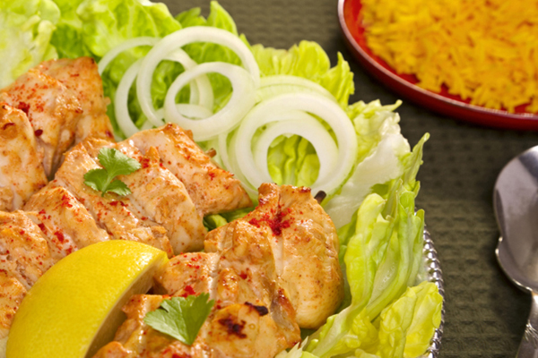
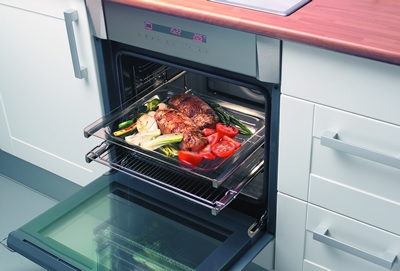

Donde cocinar es un sueño
20/08/2017
-Utiliza sartenes de cerámica o antiadherentes y espera a que esté muy caliente para echar la carne. Si no queremos utilizar nada de aceite resulta fundamental que tus sartenes no hayan perdido ese recubrimiento antiadherente con el fin de obtener los mejores resultados.
-Recuerda que si quieres cocinar a la plancha filetes más gruesos primero deberás ‘sellarlos’ por ambos lados cuando la sartén este muy caliente pero luego (una vez marcados) deberás bajar el fuego para que se cocinen por dentro, pero sin quemarse.
-Además, para que la carne quede más jugosa, se debe añadir la sal cuando ya se haya sellado en la sartén, nunca antes de cocinarla.
23/08/2017
-Una manera de que quede más jugosa sin añadir aceite consiste en ‘regarla’ en el horno con un poco de caldo vegetal y taparla con papel de aluminio para que se haga al papillote.
-Otra fórmula muy simple para una carne al horno más jugosa: cubrirla con una capa de alimentos que suelten agua, como el tomate, la cebolla o el calabacín... Le aporta sabor y jugosidad, sin sumar calorías.
-Después de asar la carne, hay que dejarla reposar unos minutos para que la humedad se distribuya homogéneamente. El resultado, un plato mucho más jugoso.